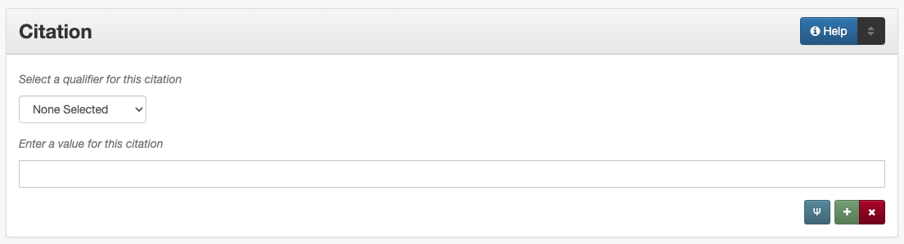

Citation
Definition
Information about a serial item, a resource from which the current resource is derived, or peer-reviewed status of items.
Where Can the Citation Information be Found?
Citation information can be found in several places including:
a title page
page headers or footers
in accompanying or supplementary information
How Citation Works in the Metadata Form
- Parts:
Citation type – drop-down menu
Citation – text field
Note: Some citation information (Peer Reviewed) opens in a pop-up modal
- Repeatable?:
Yes - to include different kinds of citation information (up to ten), click ‘Add’ to repeat all field parts; each individual information type (publication title, pages, volume, edition, etc.) cannot be repeated
- Required?
No (more information)
How Should the Citation be Filled in?
General Citation Guidelines
Only include subfield parts that are relevant
For items expressed by numbers (pages, volume, issue, etc.), do not include additional text, for example not “Vol. 1”
Publication Title
Guidelines |
Examples |
|---|---|
|
Chemical Information Bulletin |
Proceedings of the International Conference on Dublin Core and Metadata Applications |
Pages
Guidelines |
Examples |
|---|---|
List the total number of pages as a whole number |
12 |
For an item that does not start at page 1, include a range:
|
Page Start: 165
Page End: 176
|
|
Page Start: 123
Page End: 143
Physical Description: [21] p.
|
Volume/Issue
Guidelines |
Examples |
|---|---|
|
Volume: 27
Issue: 2
Note: “Volume XXVII.”
|
Edition
Guidelines |
Examples |
|---|---|
If the item has an edition number, include it as an Arabic number |
3 |
If the item has a seasonal edition, include the season or month as it appears on the item |
Fall |
Peer Reviewed
If the item has been peer-reviewed (or juried, or refereed), choose “True” from the drop-down menu
If the item has not been peer-reviewed, choose “False” from the drop-down menu
If it is unclear whether the item has been peer-reviewed, do not include this sub-element
Preferred Citation
This field should only be included if the item or accompanying information includes a preferred citation, e.g., “Cite this article as…”
List the citation exactly it as it appears on the item or accompanying information
Other Examples
- Paper Published in Conference Proceedings
Publication Title: Proceedings of the International Conference on Dublin Core and Metadata Applications
Page Start: 165
Page End: 176
Pages: 12
Peer Reviewed: True
- Photograph
Preferred Citation: Please credit: USDA - Soil Conservation Service
- Article Published in a Journal
Publication Title: Journal of Vaishnava Studies
Volume: 19
Issue: 1
- Full Serial Issue
Publication Title: Chemical Information Bulletin
Volume: 27
Issue: 2
- Revised Reference text
Edition: 3
Resources
UNT Citation Qualifier Controlled Vocabulary
More Guidelines:
Comments
This field may be used in conjunction with the Source field
This field may repeat information from other fields including Source and Title (in order to parse the citation components for search engines)
Glossary of Citation Qualifiers:
Code
Name
Definition
authorString
Author String
A list of creator names that cannot be broken into individual persons or organizations (often including “et al.”)
edition
Edition
Numeral or seasonal edition of the publication
issue
Issue
Issue number of the publication
pageEnd
Page End
The last page number on the item
pages
Pages
The total number of pages of content in the item
pageStart
Page Start
The first page number on the item
peerReviewed
Peer Reviewed
Whether or not the item has been peer-reviewed, juried, or otherwise refereed
preferredCitation
Preferred Citation
A full citation for an item in a preferred format or a crediting statement to be used in citations, not documented elsewhere in the record
publicationTitle
Publication Title
Title of the serial publication
volume
Volume
Volume number of the publication